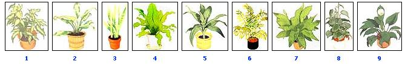

1. Arrowhead plant (Syngonium podophyllum): The leaves of this decorative aroid (sometimes called Nephthytis ) are frequently tinged with contrasting shades of cream or ash green, and they rise on long, thin stalks that are easily trained to climb bark or wooden slabs. 2. Chinese evergreen(Aglaonema modestum or commutatum): Durable if slow-growing aroids, the Chinese evergreens make excellent low-spreading table or floor plants that seldom reach over three or four feet tall. Their crisp, green, leathery leaves frequently sport elegant white or silver marbling. 3. Snake plant (Sansevieria trifasciata): The stiff, leathery, sword shaped leaves of this succulent, slow growing lily are blackish green with light green ""snakeskin"" crossbands. This must be the easiest plant ever grown. It can endure neglect. 4. Bird's-nest fern (Asplenium nidus): This' is the best fern for indoor culture because it requires less humidity than many of its relatives?although it does appreciate steady warmth and frequent watering. The stiffly spreading, shiny green fronds surround its nest like crown. 5. Cornstalk plant (Dracaena fragrans Massangeana'): This tall growing floor lily sports rich green, arching leaves, banded with light green and yellow. Chills give the cornstalk brown blotches, but it proves quite durable when provided with warm temperatures and adequate moisture. 6. Parlor palm (Chamaedorea elegans): This durable feather palm and the related, slower growing""Neanthe bella"" bear clustering frond, and can range in height from one to 10 feet. An indoor gardening , classic, it seldom needs repotting and takes well to low-moisture environments. 7. Cast-iron plant (Aspidistra elatior): True to its name, this Chinese lily tolerates all kinds of abuse, even night temperatures as chilly as 50?F. Its oblong, blackish green, cornlike leaves slowly grow to 30 inches long. 8. Heartleaf philodendron (Philodendron scandens): A fast grower, the heartleaf philodendron has deer green, heartshaped' leaves that will climb a support or cascade from hanging baskets. 9. Peace lily (Spathiphyllum): The classically elegant peace lily bears glossy, softly plaited leaves. Its white, spathelike flowers (frequently appearing in winter) rise on slender stems and provide a striking contrast to the dark foliage. Houseplants are good for us. Their presence eases much of the stress that leads to disease and may even lower blood pressure and blood sugar. Some, such as the spider plant, actually act as air purifiers, absorbing formaldehyde and other toxic indoor fumes. Beyond the health benefits, houseplants provide a living link with nature, make pleasant winter companions and lend softness and warmth to our surroundings. The problem, though, is that most indoor environments are not good for plants?after all, homes are designed to provide human comfort. Modern interiors are generally very dry, whereas many houseplants are tropical and subtropical natives that require high humidity. And indoor environments often rely on artificial lighting, which may be insufficient for many plants. So indoor gardening is not simply a ""pot and forget"" proposition. A lot of houseplants fail to flourish because of inappropriate environment or inadequate care. To increase your own chances for success, I'm going to recommend a variety of very durable, adaptable specimens and then offer a commonsense approach to caring for them.